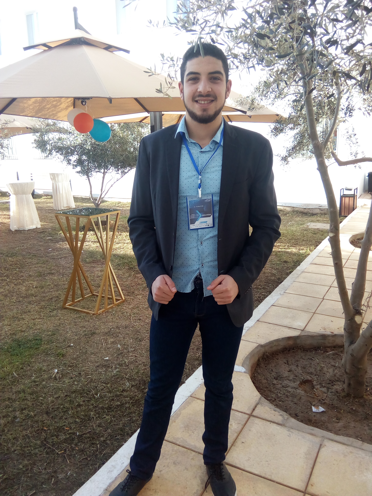

<!DOCTYPE html>
<html lang="en" xmlns="http://www.w3.org/1999/html">

<head>
    <meta charset="utf-8">
    <meta content="width=device-width, initial-scale=1.0" name="viewport">

    <title>Ahmed Amine Ghorbel </title>
    <meta content="Welcome to my profile! My name is Ahmed Amine Ghorbel and let's connect. If you want to say hi, I'll be happy to meet you more! :)"
          name="description">
    <meta name="keywords" content="Ahmed Amine Ghorbel">
    <meta name="author" content="Ahmed Amine Ghorbel">

    <meta name="robots" content="index,follow"/>

    <meta property='og:title' content="Ahmed Amine Ghorbel"/>
    <meta property='og:image' content='assets/img/social_word.png'/>
   

    <!-- Favicons -->
    <link href="assets/img/favicon.png" rel="icon">
    <link href="assets/img/apple-touch-icon.png" rel="apple-touch-icon">

    <!-- Google Fonts -->
    <link href="https://fonts.googleapis.com/css?family=Open+Sans:300,300i,400,400i,600,600i,700,700i|Raleway:300,300i,400,400i,500,500i,600,600i,700,700i|Poppins:300,300i,400,400i,500,500i,600,600i,700,700i"
          rel="stylesheet">

    <!-- Vendor CSS Files -->
    <link href="assets/vendor/aos/aos.css" rel="stylesheet">
    <link href="assets/vendor/bootstrap/css/bootstrap.min.css" rel="stylesheet">
    <link href="assets/vendor/bootstrap-icons/bootstrap-icons.css" rel="stylesheet">
    <link href="assets/vendor/boxicons/css/boxicons.min.css" rel="stylesheet">
    <link href="assets/vendor/glightbox/css/glightbox.min.css" rel="stylesheet">
    <link href="assets/vendor/swiper/swiper-bundle.min.css" rel="stylesheet">

    <!-- Template Main CSS File -->
    <link href="assets/css/style.css" rel="stylesheet">
</head>

<body>

<!-- ======= Mobile nav toggle button ======= -->
<!-- <button type="button" class="mobile-nav-toggle d-xl-none"><i class="bi bi-list mobile-nav-toggle"></i></button> -->
<i class="bi bi-list mobile-nav-toggle d-xl-none"></i>
<!-- ======= Header ======= -->
<header id="header" class="d-flex flex-column justify-content-center">

    <nav id="navbar" class="navbar nav-menu">
        <ul>
            <li><a href="#hero" class="nav-link scrollto active"><i class="bx bx-home"></i> <span>Home</span></a></li>
            <li><a href="#about" class="nav-link scrollto"><i class="bx bx-user"></i> <span>About</span></a></li>
            <li><a href="#resume" class="nav-link scrollto"><i class="bx bx-file-blank"></i> <span>Resume</span></a>
            </li>
            <li><a href="#projects" class="nav-link scrollto"><i class="bx bx-server"></i> <span>Projects</span></a>
            </li>
            <li><a href="#contact" class="nav-link scrollto"><i class="bx bx-envelope"></i> <span>Contact</span></a>
            </li>
        </ul>
    </nav><!-- .nav-menu -->

</header><!-- End Header -->

<!-- ======= Hero Section ======= -->
<section id="hero" class="d-flex flex-column justify-content-center">
    <div class="container" data-aos="zoom-in" data-aos-delay="100">
        <h1>Ahmed Amine Ghorbel</h1>
        <p>I am a <span class="typed" data-typed-items="Big Data Engineering Student, Data Science Student , Django Enthusiast , Huawei Certified , Microsoft Certified"></span></p>
        <div class="social-links">
            <a href="https://www.linkedin.com/in/ahmed-amine-ghorbel-9538261a4/" class="linkedin"><i class="bx bxl-linkedin"></i></a>
            <a href="https://github.com/GHorbel-AhmEd-AMine" class="github"><i class="bx bxl-github"></i></a>
        </div>
    </div>
</section><!-- End Hero -->

<main id="main">

    <!-- ======= About Section ======= -->
    <section id="about" class="about" style="padding-left: 25px; padding-right: 25px;">
        <div class="container" data-aos="fade-up">

            <div class="section-title">
                <h2>About</h2>
                <p>I am an enthusiastic final year Big data Engineering student with a keen interest in coding and technology. I love
                    working in the areas of Software Development and AI/ML . I am familiar with
                    many modern programming languages such as C , Python , Java and R. <br> I am actively
                    doing an internship as an Intern in IntelliTech.
                </p>
            </div>

            <div class="row">
                <div class="col-lg-4">
                    
                </div>
                <div class="col-lg-8 pt-4 pt-lg-0 content">
                    <h3>Python Developer &amp;  machine learning Engineering Student.</h3>
                    <p class="fst-italic">
                        Since I am familiar with working in many domains, I have gained skills in many technologies.
                        But, if you would like to know about my favourite area, I love tinkering with Machine Learning & Deep learning 
                        Projects more since Artifical intelligence become useful in the third industrial revolution.
                    </p>
                    <div class="row">
                        <div class="col-lg-6">
                            <ul>
                                <li><i class="bi bi-chevron-right"></i> <strong>Birthday:</strong>
                                    <span>4 juin 1997</span></li>
                                <li><i class="bi bi-chevron-right"></i> <strong>LinkedIn:</strong>
                                    <span><a href="https://www.linkedin.com/in/ahmed-amine-ghorbel-9538261a4/" style="color: #000000">Ahmed Amine Ghorbel</a></span>
                                </li>
                                <li><i class="bi bi-chevron-right"></i> <strong>Mobile:</strong>
                                    <span>+216 53715101</span></li>
                                <li><i class="bi bi-chevron-right"></i> <strong>City:</strong>
                                    <span>Sfax , Tunisia</span></li>
                            </ul>
                        </div>
                        <div class="col-lg-6">
                            <ul>
                                <li><i class="bi bi-chevron-right"></i> <strong>Age:</strong> <span>24</span></li>
                                <li><i class="bi bi-chevron-right"></i> <strong>Degree:</strong> <span>Engineering degree  in Computer Science </span>
                                </li>
                                <li><i class="bi bi-chevron-right"></i> <strong>Specialization</strong>
                                    <span>AI/ML</span></li>
                            </ul>
                        </div>
                    </div>
                    <p>
                    <h4>😇 What am I doing currently?</h4>
                    🔭 I’m currently working on two deep learning project projects: A computer vision project &amp; NLP
                    Project.<br>
                    🌱 I’m currently learning MLOps : Machine learning operations tools <br>
                    👯 I’m looking to collaborate on any project, but I am more interested in system-level
                    projects.<br>
                    💬 Feel free to ask me about Python , machine learning and deep learning<br>
                    🏢 If you are recruiter looking up for my profile, I am willing to work at your company.
                    </p>
                </div>
            </div>

        </div>
    </section><!-- End About Section -->

    <!-- ======= Skills Section ======= -->
    <section id="skills" class="skills section-bg" style="padding-left: 25px; padding-right: 25px;">
        <div class="container" data-aos="fade-up">

            <div class="section-title">
                <h2>Skills</h2>
                <p>While I showcase my skills below, I must tell you that I am a quick learning individual. And not only
                    that, I am adaptive to the rapidly changing environment. That's why I keep working towards improving
                    my learnt skills.</p>
            </div>

            <div class="row skills-content">

                <div class="col-lg-6">

                    <div class="progress">
                        <span class="skill">Python <i class="val">90%</i></span>
                        <div class="progress-bar-wrap">
                            <div class="progress-bar" role="progressbar" aria-valuenow="90" aria-valuemin="0"
                                 aria-valuemax="100"></div>
                        </div>
                    </div>

                    <div class="progress">
                        <span class="skill">Java <i class="val">80%</i></span>
                        <div class="progress-bar-wrap">
                            <div class="progress-bar" role="progressbar" aria-valuenow="80" aria-valuemin="0"
                                 aria-valuemax="100"></div>
                        </div>
                    </div>

                    <div class="progress">
                        <span class="skill">R language <i class="val">75%</i></span>
                        <div class="progress-bar-wrap">
                            <div class="progress-bar" role="progressbar" aria-valuenow="75" aria-valuemin="0"
                                 aria-valuemax="100"></div>
                        </div>
                    </div>

                    <div class="progress">
                        <span class="skill">SQL <i class="val">80%</i></span>
                        <div class="progress-bar-wrap">
                            <div class="progress-bar" role="progressbar" aria-valuenow="85" aria-valuemin="0"
                                 aria-valuemax="100"></div>
                        </div>
                    </div>
                    <div class="progress">
                        <span class="skill">Big Data<i class="val">60%</i></span>
                        <div class="progress-bar-wrap">
                            <div class="progress-bar" role="progressbar" aria-valuenow="85" aria-valuemin="0"
                                 aria-valuemax="100"></div>
                        </div>
                    </div>


                </div>

                <div class="col-lg-6">

                    <div class="progress">
                        <span class="skill">C language <i class="val">75%</i></span>
                        <div class="progress-bar-wrap">
                            <div class="progress-bar" role="progressbar" aria-valuenow="75" aria-valuemin="0"
                                 aria-valuemax="100"></div>
                        </div>
                    </div>

                    <div class="progress">
                        <span class="skill">Flask<i class="val">70%</i></span>
                        <div class="progress-bar-wrap">
                            <div class="progress-bar" role="progressbar" aria-valuenow="70" aria-valuemin="0"
                                 aria-valuemax="100"></div>
                        </div>
                    </div>

                    <div class="progress">
                        <span class="skill">Linux <i class="val">70%</i></span>
                        <div class="progress-bar-wrap">
                            <div class="progress-bar" role="progressbar" aria-valuenow="70" aria-valuemin="0"
                                 aria-valuemax="100"></div>
                        </div>
                    </div>

                    <div class="progress">
                        <span class="skill">HTML/CSS/JavaScript <i class="val">60%</i></span>
                        <div class="progress-bar-wrap">
                            <div class="progress-bar" role="progressbar" aria-valuenow="75" aria-valuemin="0"
                                 aria-valuemax="100"></div>
                        </div>
                    </div>

                    <div class="progress">
                        <span class="skill">Django<i class="val">60%</i></span>
                        <div class="progress-bar-wrap">
                            <div class="progress-bar" role="progressbar" aria-valuenow="80" aria-valuemin="0"
                                 aria-valuemax="100"></div>
                        </div>
                    </div>

                </div>

            </div>

        </div>
    </section><!-- End Skills Section -->

    <!-- ======= Resume Section ======= -->
    <section id="resume" class="resume" style="padding-left: 25px; padding-right: 25px;">
        <div class="container" data-aos="fade-up">

            <div class="section-title">
                <h2>Resume</h2>
                <p>Here is my resume. You can download it in PDF format as well if you are more interested.</p>
            </div>

            <div class="text-center">
                <a href="assets/resume/Ahmed_Amine_Ghorbel_Resume.pdf">
                    <button>Download My Resume</button>
                </a>
            </div>

            <div class="row" style="margin-top: 20px;">
                <div class="col-lg-6">
                    <h3 class="resume-title">Summary</h3>
                    <div class="resume-item pb-0">
                        <h4>Ahmed Amine Ghorbel</h4>
                        <p><em>Problem-solving &amp; Machine learning Engineering Student  with 1+ years of self-gained skills
                            in
                            developing user-centred projects from the initial concept to the final,
                            polished deliverable. I have created all of my projects from scratch and no am working in 
                            differents kind of Deep learning Projects.
                        </em></p>
                        <ul>
                            <li>Sfax, Tunisia</li>
                            <li>+216 53715101</li>
                            <li>ghorbelahmedaminelfet@gmail.com</li>
                        </ul>
                    </div>

                    <h3 class="resume-title">Education</h3>
                    <div class="resume-item">
                        <h4>Engineering Student : First &amp; Second Year Laureate
                            DATA ENGINEERING AND DECISION-MAKING SYSTEMS</h4>
                        <h5>2019 - 2022</h5>
                        <p><em>National School of Electronics and Telecommunications, Sfax Tunisia</em></p>
                        <ul>
                            <li>One of the highest scoring student of my class.</li>
                            <li>Contributing in a variety of Machine learning &amp; Deep Learning academic Projects</li>
                            <li>Participate in many competitions and Hackathons</li>
                        </ul>
                    </div>
                    <div class="resume-item">
                        <h4>Diploma in License in Electronics and Telecommunications</h4>
                        <h5>2016 - 2019</h5>
                        <p><em>National School of Electronics and Telecommunications, Sfax Tunisia</em></p>
                        <ul>
                            <li>First &amp; Second Year Laureate</li>
                            <li>Highest scoring student of my class in the first and second year.</li>
                            <li>My graduation project is a smart house with Arduino Mega board </li>
                        </ul>
                    </div>
                    <div class="resume-item">
                        <h4>Bachelor of Mathematics</h4>
                        <h5>2016</h5>
                        <p><em>Fadhel Ben Acheur college , Sfax Tunisia</em></p>
                        <ul>
                            <li>One of the highest scoring student of my class.</li>
                        </ul>
                    </div>
                </div>
                <div class="col-lg-6">
                    <h3 class="resume-title">Experiences</h3>
                    <div class="resume-item">
                        <h4>Computer Vision research intern at
                            Udini</h4>
                        <h5>06/2021 - 08/2021</h5>
                        <p><em>digital research center, Sfax Tunisia</em></p>
                        <ul>
                            <li>Udini is a deep Tech start-up in the dental sector, its ambition is to transform dentistry through 
                                artificial intelligence by providing diagnostic assistance for practitioners and better predictability of 
                                the ideal treatment outcome.
                            </li>
                            <li>
                                Task : Explore deep learning models to automatically transfer images acquired in 
                                the
                                visible domain to the near infrared domain
                                in a controlled context.
                                
                            </li>
                        </ul>
                    </div>
                    <div class="resume-item">
                        <h4>Academic Researcher</h4>
                        <h5>01/2020 - 04/2021</h5>
                        <p><em>National School of Electronics and Telecommunications, Sfax Tunisia</em></p>
                        <ul>
                            <li>Human Activity Recognition in Thermal Infrared video</li>
                            <li>This is the End of year project at the university which aim to track , recognise and
                                classify the human activity in thermal infrared video</li>
                            <li>Highest scoring Project of my class.</li>
                        </ul>
                    </div>
                    <div class="resume-item">
                        <h4>Summer intern at Intellitech
                        </h4>
                        <h5>08/2020 - 09/2021</h5>
                        <p><em>IntelliTech
                        </em></p>
                        <ul>
                            <li>Create an Artificial Intelligence customized assistant (Bot) to extract
                                automatically data from documents.</li>
                            <li> Create An API of this functionality connected to Odoo.</li>
                        </ul>
                    </div>
                </div>
                <div class="col-lg-6">
                    <h3 class="resume-title">Certificates</h3>
                    <div class="resume-item">
                        <h4>certification HCIA-AI (Artifical Intelligence)</h4>
                        <h5>Huwaei</h5>
                        <p><em>March 2021 – March 2024</em></p>
                    </div>
                    <div class="resume-item">
                        <h4>DeepLearning.AI TensorFlow Developper Specialization
                        </h4>
                        <h5>Coursera
                        </h5>
                        <p><em>March 2021 – No Expiration Date</em></p>
                    </div>
                
                    <div class="resume-item">
                        <h4>Scrum Foundation professional Certificate</h4>
                        <h5>CertiProf
                        </h5>
                        <p><em>January 2021 – No Expiration Date</em></p>
                    </div>
                    <div class="resume-item">
                        <h4>Database Fundamentals</h4>
                        <h5>Microsoft
                        </h5>
                        <p><em>february 2021 – No Expiration Date</em></p>
                    </div>
                    <div class="resume-item">
                        <h4>Introduction to Programming using Python</h4>
                        <h5>Microsoft
                        </h5>
                        <p><em>January 2021 – No Expiration Date</em></p>
                    </div>
                </div>
                <div class="col-lg-6">
                    <h3 class="resume-title">Social Activities</h3>
                    <div class="resume-item">
                        <h4>IEEE PES Treasurer
                        </h4>
                        <h5>National School of Electronics and Telecommunications (Enet'Com)
                        </h5>
                        <p><em>september 2018 - september 2019</em></p>
                        <ul>
                            <li>My role as an advisor to the business on
                                financial matters, help develop long-term
                                strategies and policies, and always ensure
                                the organization has enough money.</li>
                        </ul>
                    </div>
                    <div class="resume-item">
                        <h4>Club AI Enet'Com Member
                        </h4>
                        <h5>National School of Electronics and Telecommunications (Enet'Com)
                        </h5>
                        <p><em>september 2019 - september 2020</em></p>
                        <ul>
                            <li>I joined this club since it offers workshops and training on artificial intelligence and 
                                big data, 
                                which helps me to better develop my skills in this field.</li>
                        </ul>
                    </div>
                    
                    <div class="resume-item">
                        <h4>AIESEC Member</h4>
                        <h5>AIESEC</h5>
                        <p><em>January 2017 – January 2018</em></p>
                        <ul>
                            <li>I have the honor to do a voluntary internship with the AIESEC community of a month and a half in 
                                Turkey 
                                for 
                                the purpose of teaching English to children at secondary school</li>

                            <li>It was a very enriching experience which allowed me to develop
                             my personality and to manage well the difficulties encountered throughout the experience</li>
                        </ul>

                    </div>
                
                   
                </div>
            </div>

        </div>
    </section><!-- End Resume Section -->

    <!-- ======= Projects Section ======= -->
    <section id="projects" class="projects" style="padding-left: 25px; padding-right: 25px;">
        <div class="container" data-aos="fade-up">

            <div class="section-title">
                <h2>Projects</h2>
                <p>Here are the projects on which I am most proud of. Not only that, there are several many other
                    smaller
                    and less significant projects which helped me in improving my skills throughout my learning
                    process. </p>
            </div>

            <div class="row">

                <div class="col-lg-4 col-md-6 d-flex align-items-stretch" data-aos="zoom-in" data-aos-delay="100">
                    <div class="icon-box iconbox-blue">
                        <div class="icon">
                            <svg width="100" height="100" viewBox="0 0 600 600" xmlns="http://www.w3.org/2000/svg">
                                <path stroke="none" stroke-width="0" fill="#f5f5f5"
                                      d="M300,521.0016835830174C376.1290562159157,517.8887921683347,466.0731472004068,529.7835943286574,510.70327084640275,468.03025145048787C554.3714126377745,407.6079735673963,508.03601936045806,328.9844924480964,491.2728898941984,256.3432110539036C474.5976632858925,184.082847569629,479.9380746630129,96.60480741107993,416.23090153303,58.64404602377083C348.86323505073057,18.502131276798302,261.93793281208167,40.57373210992963,193.5410806939664,78.93577620505333C130.42746243093433,114.334589627462,98.30271207620316,179.96522072025542,76.75703585869454,249.04625023123273C51.97151888228291,328.5150500222984,13.704378332031375,421.85034740162234,66.52175969318436,486.19268352777647C119.04800174914682,550.1803526380478,217.28368757567262,524.383925680826,300,521.0016835830174"></path>
                            </svg>
                            <i class="bx bi-journal-code"></i>
                        </div>
                        <h4><a href="">COVID-19 Detection from Chest X-ray Images</a></h4>
                        <p>Developing a mobile app to detect COVID-19 from Chest X-ray Images</p>
                        <p>Keywords: Java , YOLOv4, TensorFlow,CNN.</p>
                    </div>
                </div>

                <div class="col-lg-4 col-md-6 d-flex align-items-stretch mt-4 mt-md-0" data-aos="zoom-in"
                     data-aos-delay="200">
                    <div class="icon-box iconbox-orange ">
                        <div class="icon">
                            <svg width="100" height="100" viewBox="0 0 600 600" xmlns="http://www.w3.org/2000/svg">
                                <path stroke="none" stroke-width="0" fill="#f5f5f5"
                                      d="M300,582.0697525312426C382.5290701553225,586.8405444964366,449.9789794690241,525.3245884688669,502.5850820975895,461.55621195738473C556.606425686781,396.0723002908107,615.8543463187945,314.28637112970534,586.6730223649479,234.56875336149918C558.9533121215079,158.8439757836574,454.9685369536778,164.00468322053177,381.49747125262974,130.76875717737553C312.15926192815925,99.40240125094834,248.97055460311594,18.661163978235184,179.8680185752513,50.54337015887873C110.5421016452524,82.52863877960104,119.82277516462835,180.83849132639028,109.12597500060166,256.43424936330496C100.08760227029461,320.3096726198365,92.17705696193138,384.0621239912766,124.79988738764834,439.7174275375508C164.83382741302287,508.01625554203684,220.96474134820875,577.5009287672846,300,582.0697525312426"></path>
                            </svg>
                            <i class="bx bi-upc-scan"></i>
                        </div>
                        <h4><a href="">Real-Time Face Mask Detector &amp; Image Prediction using AI/ML.</a></h4>
                        <p>
                            Building a mask detector classifier to find out if the person is
wearing a mask or not.
                        </p>
                        <p>Keywords:TensorFlow , Keras , OpenCV.</p>
                    </div>
                </div>

                <div class="col-lg-4 col-md-6 d-flex align-items-stretch mt-4 mt-lg-0" data-aos="zoom-in"
                     data-aos-delay="300">
                    <div class="icon-box iconbox-pink">
                        <div class="icon">
                            <svg width="100" height="100" viewBox="0 0 600 600" xmlns="http://www.w3.org/2000/svg">
                                <path stroke="none" stroke-width="0" fill="#f5f5f5"
                                      d="M300,541.5067337569781C382.14930387511276,545.0595476570109,479.8736841581634,548.3450877840088,526.4010558755058,480.5488172755941C571.5218469581645,414.80211281144784,517.5187510058486,332.0715597781072,496.52539010469104,255.14436215662573C477.37192572678356,184.95920475031193,473.57363656557914,105.61284051026155,413.0603344069578,65.22779650032875C343.27470386102294,18.654635553484475,251.2091493199835,5.337323636656869,175.0934190732945,40.62881213300186C97.87086631185822,76.43348514350839,51.98124368387456,156.15599469081315,36.44837278890362,239.84606092416172C21.716077023791087,319.22268207091537,43.775223500013084,401.1760424656574,96.891909868211,461.97329694683043C147.22146801428983,519.5804099606455,223.5754009179313,538.201503339737,300,541.5067337569781"></path>
                            </svg>
                            <i class="bx bx-tachometer"></i>
                        </div>
                        <h4><a href="">Sentiment Analysis</a></h4>
                        <p>Exploring the similarities and differences at transcripts of various
                            comedians using Sentiment Analysis</p>
                        <p>Keywords : Web Scrapping,natural language processing.</p>
                    </div>
                </div>

            </div>

        </div>
    </section><!-- End Projects Section -->

    <!-- ======= Contact Section ======= -->
    <section id="contact" class="contact" style="padding-left: 25px; padding-right: 25px;">
        <div class="container" data-aos="fade-up">

            <div class="section-title">
                <h2>Contact</h2>
            </div>
            <div class="info" style="margin-bottom: 40px;">
                <div class="row">
                    <div class="address col-md">
                        <i class="bi bi-geo-alt-fill"></i>
                        <h4>Location:</h4>
                        <p>Sfax, Tunisia</p>
                    </div>

                    <div class="email col-md">
                        <i class="bi bi-chat-square-dots-fill"></i>
                        <h4>Email:</h4>
                        <p>ghorbelahmedaminelfet@gmail.com</p>
                    </div>

                    <div class="phone col-md">
                        <i class="bi bi-phone-fill"></i>
                        <h4>Mobile:</h4>
                        <p>+216 53715101</p>
                    </div>
                </div>
                <div class="row">
                    <div class="linkedin col-md">
                        <a href="https://www.linkedin.com/in/ahmed-amine-ghorbel-9538261a4/">
                            <i class="bi bi-linkedin"></i>
                            <h4>LinkedIn:</h4>
                            <p>@ahmedamineghorbel</p></a>
                    </div>

                    <div class="github col-md">
                        <a href="https://github.com/GHorbel-AhmEd-AMine">
                            <i class="bi bi-github"></i>
                            <h4>GitHub:</h4>
                            <p>@ahmedamineghorbel</p></a>
                    </div>

                    <div class="whatsapp col-md">
                        <a href="https://api.whatsapp.com/send/?phone=%2B919430490286&text=Hi&lang=en">
                            <i class="bi bi-whatsapp"></i>
                            <h4>WhatsApp:</h4>
                            <p>+21653715101</p></a>
                    </div>

                </div>
            </div>
        </div>
    </section><!-- End Contact Section -->

</main><!-- End #main -->

<!-- ======= Footer ======= -->
<footer id="footer" style="padding-left: 25px; padding-right: 25px;">
    <div class="container">
        <h3>Ahmed Amine Ghorbel</h3>
        <p>I love connecting with different people so if you want to say hi, I'll be happy to meet you more! :)</p>
        <div class="social-links">
            <a href="https://www.linkedin.com/in/ahmed-amine-ghorbel-9538261a4/" class="linkedin"><i class="bx bxl-linkedin"></i></a>
            <a href="https://github.com/GHorbel-AhmEd-AMine" class="github"><i class="bx bxl-github"></i></a>
        </div>
    </div>
</footer><!-- End Footer -->

<div id="preloader"></div>
<a href="#hero" class="back-to-top d-flex align-items-center justify-content-center scrollto"><i
        class="bi bi-arrow-up-short"></i></a>

<!-- Vendor JS Files -->
<script src="assets/vendor/aos/aos.js"></script>
<script src="assets/vendor/bootstrap/js/bootstrap.bundle.min.js"></script>
<script src="assets/vendor/glightbox/js/glightbox.min.js"></script>
<script src="assets/vendor/isotope-layout/isotope.pkgd.min.js"></script>
<script src="assets/vendor/purecounter/purecounter.js"></script>
<script src="assets/vendor/swiper/swiper-bundle.min.js"></script>
<script src="assets/vendor/typed.js/typed.min.js"></script>
<script src="assets/vendor/waypoints/noframework.waypoints.js"></script>

<!-- Template Main JS File -->
<script src="assets/js/main.js"></script>
</body>

</html>
